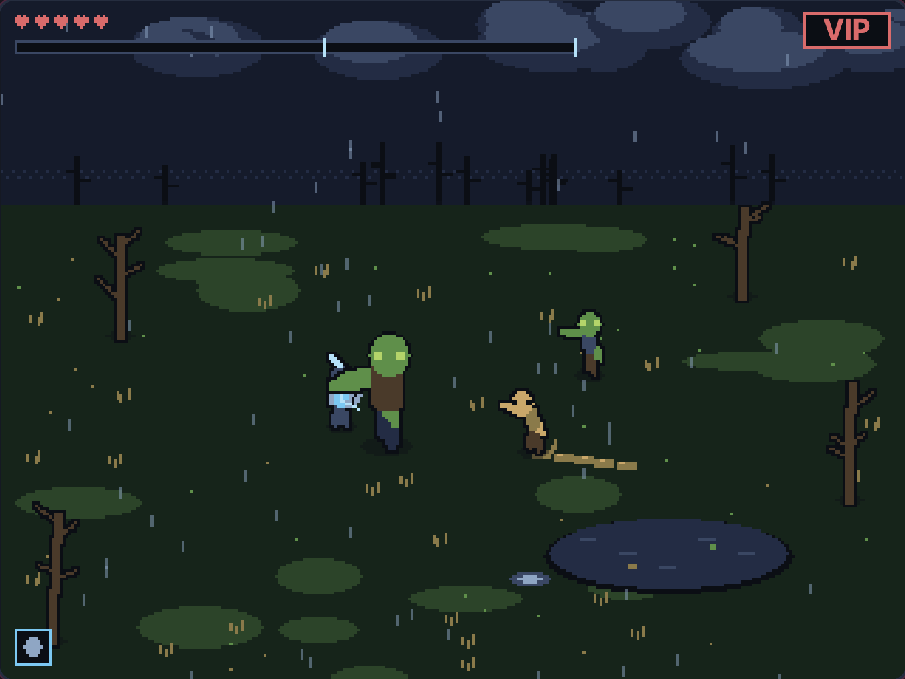
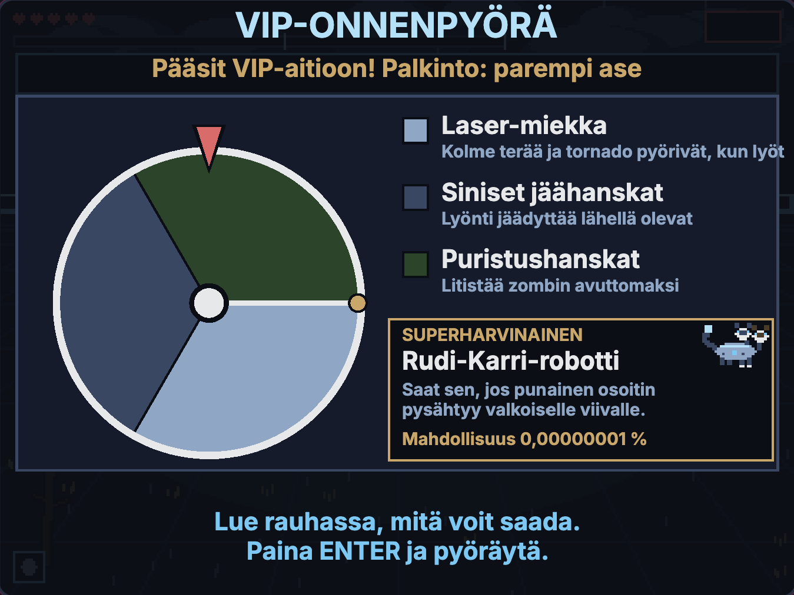
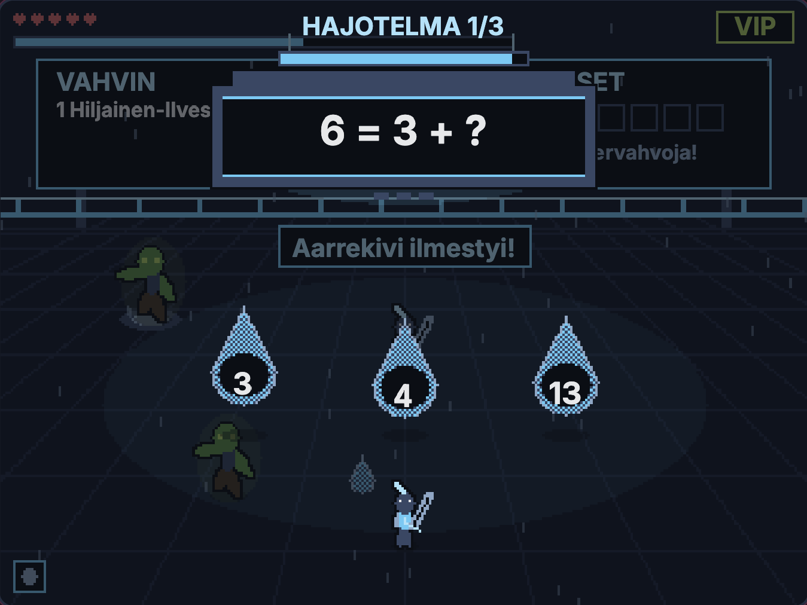

Ylläri-Zombit
Pikseligrafiikkapeli yöstä, sateesta ja zombeista. Pelin idean, tarinan ja hahmot on suunnitellut Maujazz.
Mistä peli on tullut
Maujazz piirsi ja kirjoitti ylös pelin: myrskyisen yön, mädän metsän, salamat ja sateesta syntyvät zombit. Hänen piirtämiensä hahmojen pohjalta tehtiin viholliset ja koko pelin ulkoasu. Pitkät, lehden muotoiset raajat ja eloisan vinot hahmot ovat suoraan hänen piirrostyyliään. Myös aseet, onnenpyörä ja VIP-aitio ovat hänen ideoitaan.
Peli lyhyesti
Ritari kulkee yön metsässä, ja sateen pisaroista nousee zombeja. Peli pelataan tietokoneella näppäimistöllä ja hiirellä, ja yksi kierros kestää muutaman minuutin. Kun tarpeeksi zombeja on kaatunut, salama vie pelaajan VIP-aitioon, jossa pelin loppuosa pelataan.

Onnenpyörä
VIP-aitiossa onnenpyörä antaa uuden aseen. Harvinaisin voitto on Rudi-Karri-robotti, joka on nimetty kahden kissan mukaan.

Hajotelmat
VIP-aitiossa on lukkokivi, jossa on lasku, josta puuttuu osa. Pelaaja kävelee oikeaan kolmesta pisarasta. Kolme oikeaa avaa kiven, ja sen takana on Salamaluola aarrearkkuineen. Kivi on vapaaehtoinen, eikä väärä vastaus vie sydäntä. Vaikeustason valitsee pelaaja: helpoimmillaan luvut ovat alle 20, vaikeimmillaan 1000 = 640 + 250 + ?.

Hajotelmat ovat vanhemman ehdotus, ja Maujazz hyväksyi ne osaksi peliä.
Avaa peliPeli pelataan tietokoneella. Avaa tämä sivu tietokoneella, niin pääset pelaamaan.